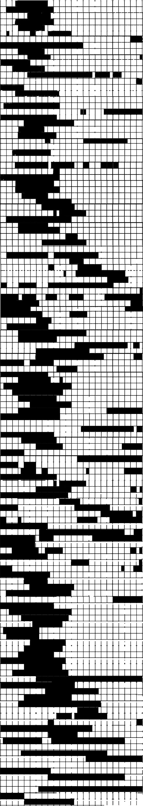
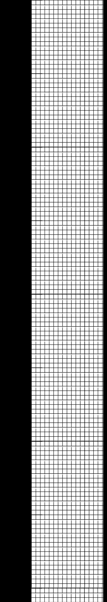
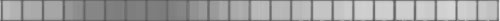
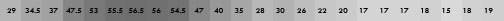
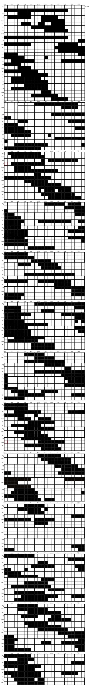

Pictured below are 134 out of the 147 days between Aug 30th, 2021,
and Jan 24th, 2022.

Each row contains 24 boxes, each box represents 1 hour.
A black box represents an hour I was asleep, a white box an hour I was awake.
Some days I recorded half-hour intervals too.
15 days are missing from the chart.
These were days, usually in clusters, where I was asleep to often to record.
I update the document usually within a day of waking up.
According to doctors, psychologists, and statistics on the internet, I ideally would sleep 8 hours a day, at the same time, maybe falling asleep around 11pm or so.
That is pictured below.

On an average day, this is when I will be asleep:

The digit and value representing the number of days I was asleep during an hour from the latter 100 rows, per hour:

The mean is 7.924999 repeating.
Equivalent to 7 hours, 55 minutes, and 30 seconds of sleep per day.
I was honestly suprized.
Day by day, from the ground,
Sleep is a violent act.
Jan 25th, to Jan 29th, there is a beeping in my ears.
It is not tinnitus.
My alarm clock sounding in the other room:
It's a fair analogy for what the sleep disorder sounds like.
I thought it was a little on-the-nose.
The disorder is called "Non-24-hour sleep–wake disorder".
Also called Free-running sleep disorder.
Hover to run:
Without artificial partitions into 24 hour periods, the sound of an alarm clock is too rythmic to be representational.
This is the noise made when read as a Variable Density audio track, like that on a running film strip:
Hover to play
Now at this point, I have class in three hours,
I've been working on this since 10 and I woke up at 11, so I'd like a little nap please.
Here are some other elements I haven't had time to add:
Read as a Variable Density audio track, static included:
With pitch correction:
(I think the wooshing fits with the 'free running')
Fun trivia: N-24 occurs among 50-70% of those who are completley blind.
Diagnosable causes among those who are sighted are traumatic brain injury.
Otherwise, the cause is attibuted to any co-occuring psychlogical disorder in the patient.
This is medical speak for 'unknown'.
Program I use for video has 'Audio dance vizualization', it looks like this:
(I like that it is jarring, threatening, refer back to violence)
I have no memory of sustaining a traumatic brain injury at any point in life.
It is a bit unsettling to have the natural equivalent.
I take this as an excuse to inflict traumatic brain injury onto my editing program.
(Maybe I am just spiteful.)
Program I use for video has 'Hemispherical to Equirectangular projection filter', I can do this with it:
(The days braid together into eachother)
(Audio dance vizualization + pitch correction. I use this file for the upcoming videos too.)
Hemispherical to Equirectangular projection filter, fully fucked with:
Hemispherical to Equirectangular projection filter again:
(There's a symmetry the program really likes, I don't know, maybe it's like eyes.)
(Eyes, of course, an obligatory motif in sleep. Are they open or not?)
(Subtle eyes: a veiled enemy- refer back to threatening, violence, traumatic brain injury)
Below is about the most F'd I could get the program:
For reference:
I feel like I brought it back around to something figurative.
Quarantine was really like that, huh?
I've been trying to see how much of it is blacked out.
A lot of it apparently.
But look, theres me, my window, and the passing of time:
That seems pretty appropriate to my memory of it all.
Pictured below is the original sleep chart, showing 191 days between Sept 20th, 2020, and Mar 30th, 2021.
